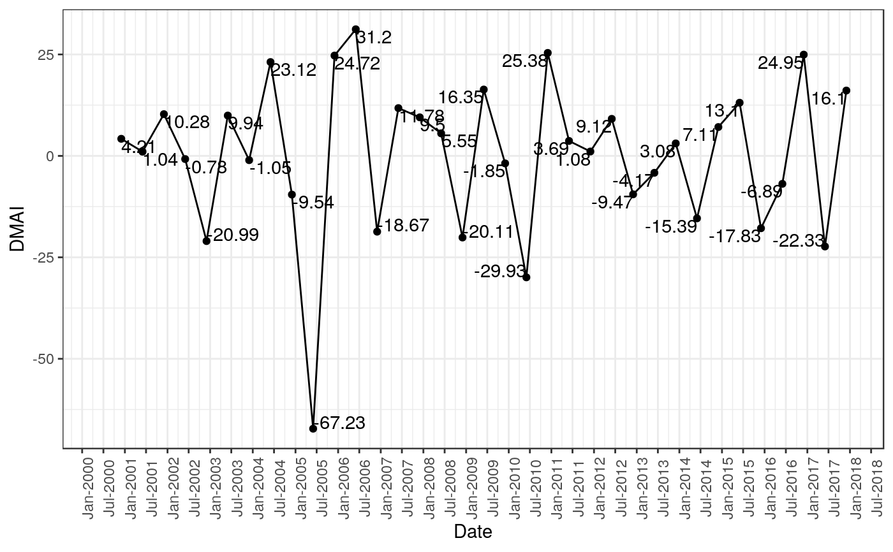
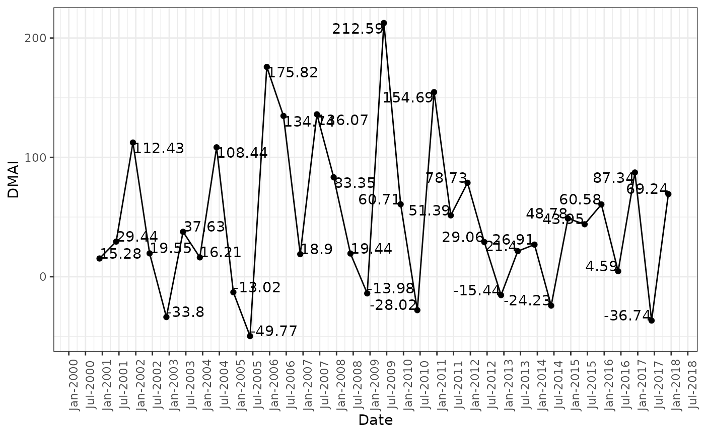

Calculates Divisia monetary aggregates index as given in Barnett, W. A. (1980).
# S3 method for default
dmai(.data, method = c("Barnett", "Hancock"), logbase = NULL)data.frame
Method to calculate Divisia monetary aggregates index, Barnett or Hancock
base of log to be used in Barnett divisia monetary aggregates index method, default is NULL or 10
Divisia Monetary Aggregates Index
Barnett, W. A. (1980). Economic Monetary Aggregates: An Application of Aggregation and Index Number Theory. Journal of Econometrics. 14(1):11-48. (https://www.sciencedirect.com/science/article/pii/0304407680900706)
Data <-
tibble::tibble(
Date = paste(c("Jun", "Dec"), rep(seq(from = 2000, to = 2017, by = 1), each = 2), sep = "-")
, x1 = runif(n = 36, min = 162324, max = 2880189)
, x2 = runif(n = 36, min = 2116, max = 14542)
, x3 = runif(n = 36, min = 92989, max = 3019556)
, x4 = runif(n = 36, min = 205155, max = 4088784)
, x5 = runif(n = 36, min = 6082, max = 186686)
, x6 = runif(n = 36, min = 11501, max = 50677)
, x7 = runif(n = 36, min = 61888, max = 901419)
, x8 = runif(n = 36, min = 13394, max = 347020)
, x9 = runif(n = 36, min = 25722, max = 701887)
, x10 = runif(n = 36, min = 6414, max = 37859)
, x11 = runif(n = 36, min = 11688, max = 113865)
, x12 = runif(n = 36, min = 2311, max = 23130)
, x13 = runif(n = 36, min = 23955, max = 161318)
, r1 = runif(n = 36, min = 0.00, max = 0.00)
, r2 = runif(n = 36, min = 0.00, max = 0.00)
, r3 = runif(n = 36, min = 0.00, max = 0.00)
, r4 = runif(n = 36, min = 0.93, max = 7.43)
, r5 = runif(n = 36, min = 1.12, max = 7.00)
, r6 = runif(n = 36, min = 0.99, max = 7.93)
, r7 = runif(n = 36, min = 1.51, max = 7.42)
, r8 = runif(n = 36, min = 2.20, max = 9.15)
, r9 = runif(n = 36, min = 2.64, max = 9.37)
, r10 = runif(n = 36, min = 2.80, max = 11.34)
, r11 = runif(n = 36, min = 3.01, max = 12.41)
, r12 = runif(n = 36, min = 2.78, max = 13.68)
, r13 = runif(n = 36, min = 3.23, max = 14.96)
)
Data$Date <- as.Date(paste("01", Data$Date, sep = "-"), format = "%d-%b-%Y")
Data
#> # A tibble: 36 × 27
#> Date x1 x2 x3 x4 x5 x6 x7 x8 x9
#> <date> <dbl> <dbl> <dbl> <dbl> <dbl> <dbl> <dbl> <dbl> <dbl>
#> 1 2000-06-01 2121643. 12912. 1184412. 1.18e6 3.26e4 18065. 3.36e5 2.42e4 3.68e5
#> 2 2000-12-01 2542557. 13351. 1075745. 1.04e6 1.79e5 27562. 5.11e5 1.00e5 3.76e5
#> 3 2001-06-01 2230571. 9788. 234200. 2.57e6 1.85e5 19189. 5.87e5 3.06e5 5.03e5
#> 4 2001-12-01 2570691. 3781. 1904380. 1.69e6 9.57e4 21663. 2.05e5 2.96e5 5.88e5
#> 5 2002-06-01 1402978. 11836. 2906729. 3.14e6 1.72e5 49518. 1.54e5 1.90e4 6.69e4
#> 6 2002-12-01 614500. 7449. 2009775. 1.68e6 7.33e4 43298. 1.52e5 7.47e4 2.53e5
#> 7 2003-06-01 1045889. 13638. 1586393. 3.29e6 1.55e5 25118. 1.40e5 5.20e4 5.68e5
#> 8 2003-12-01 1546327. 11724. 532261. 3.72e6 1.07e5 48262. 5.11e5 1.73e5 2.17e5
#> 9 2004-06-01 2140129. 5343. 2640413. 4.03e6 1.50e5 17902. 8.14e5 3.30e5 5.77e5
#> 10 2004-12-01 2852295. 6108. 1598537. 2.49e6 6.97e4 17644. 6.58e5 2.89e5 1.71e5
#> # ℹ 26 more rows
#> # ℹ 17 more variables: x10 <dbl>, x11 <dbl>, x12 <dbl>, x13 <dbl>, r1 <dbl>,
#> # r2 <dbl>, r3 <dbl>, r4 <dbl>, r5 <dbl>, r6 <dbl>, r7 <dbl>, r8 <dbl>,
#> # r9 <dbl>, r10 <dbl>, r11 <dbl>, r12 <dbl>, r13 <dbl>
# Divisia monetary aggregates index using Barnett method
DMAIBarnett <- dmai(.data = Data, method = "Barnett", logbase = NULL)
DMAIBarnett
#> # A tibble: 36 × 2
#> # Groups: Date [36]
#> Date DMAI
#> <date> <dbl>
#> 1 2000-06-01 NA
#> 2 2000-12-01 4.21
#> 3 2001-06-01 1.04
#> 4 2001-12-01 10.3
#> 5 2002-06-01 -0.777
#> 6 2002-12-01 -21.0
#> 7 2003-06-01 9.94
#> 8 2003-12-01 -1.05
#> 9 2004-06-01 23.1
#> 10 2004-12-01 -9.54
#> # ℹ 26 more rows
DMAIBarnett1 <- dmai(.data = Data, method = "Barnett", logbase = 10)
DMAIBarnett1
#> # A tibble: 36 × 2
#> # Groups: Date [36]
#> Date DMAI
#> <date> <dbl>
#> 1 2000-06-01 NA
#> 2 2000-12-01 4.21
#> 3 2001-06-01 1.04
#> 4 2001-12-01 10.3
#> 5 2002-06-01 -0.777
#> 6 2002-12-01 -21.0
#> 7 2003-06-01 9.94
#> 8 2003-12-01 -1.05
#> 9 2004-06-01 23.1
#> 10 2004-12-01 -9.54
#> # ℹ 26 more rows
DMAIBarnett2 <- dmai(.data = Data, method = "Barnett", logbase = 2)
DMAIBarnett2
#> # A tibble: 36 × 2
#> # Groups: Date [36]
#> Date DMAI
#> <date> <dbl>
#> 1 2000-06-01 NA
#> 2 2000-12-01 14.0
#> 3 2001-06-01 3.45
#> 4 2001-12-01 34.2
#> 5 2002-06-01 -2.58
#> 6 2002-12-01 -69.7
#> 7 2003-06-01 33.0
#> 8 2003-12-01 -3.49
#> 9 2004-06-01 76.8
#> 10 2004-12-01 -31.7
#> # ℹ 26 more rows
DMAIBarnett3 <- dmai(.data = Data, method = "Barnett", logbase = exp(1))
DMAIBarnett3
#> # A tibble: 36 × 2
#> # Groups: Date [36]
#> Date DMAI
#> <date> <dbl>
#> 1 2000-06-01 NA
#> 2 2000-12-01 9.69
#> 3 2001-06-01 2.39
#> 4 2001-12-01 23.7
#> 5 2002-06-01 -1.79
#> 6 2002-12-01 -48.3
#> 7 2003-06-01 22.9
#> 8 2003-12-01 -2.42
#> 9 2004-06-01 53.2
#> 10 2004-12-01 -22.0
#> # ℹ 26 more rows
# Divisia monetary aggregates index using Hancock method
DMAIHancock <- dmai(.data = Data, method = "Hancock")
DMAIHancock
#> # A tibble: 36 × 2
#> # Groups: Date [36]
#> Date DMAI
#> <date> <dbl>
#> 1 2000-06-01 NA
#> 2 2000-12-01 15.3
#> 3 2001-06-01 29.4
#> 4 2001-12-01 112.
#> 5 2002-06-01 19.5
#> 6 2002-12-01 -33.8
#> 7 2003-06-01 37.6
#> 8 2003-12-01 16.2
#> 9 2004-06-01 108.
#> 10 2004-12-01 -13.0
#> # ℹ 26 more rows
library(ggplot2)
ggplot(data = DMAIBarnett, mapping = aes(x = Date, y = DMAI)) +
geom_point() +
geom_line() +
geom_text(aes(label = round(DMAI, 2)), vjust = "inward", hjust = "inward") +
scale_x_date(
date_breaks = "6 months"
, date_labels = "%b-%Y"
, limits = c(min(DMAIBarnett$Date), max = max(DMAIBarnett$Date))) +
theme_bw() +
theme(axis.text.x = element_text(angle = 90))
#> Warning: Removed 1 row containing missing values or values outside the scale range
#> (`geom_point()`).
#> Warning: Removed 1 row containing missing values or values outside the scale range
#> (`geom_line()`).
#> Warning: Removed 1 row containing missing values or values outside the scale range
#> (`geom_text()`).

ggplot(data = DMAIHancock, mapping = aes(x = Date, y = DMAI)) +
geom_point() +
geom_line() +
geom_text(aes(label = round(DMAI, 2)), vjust = "inward", hjust = "inward") +
scale_x_date(
date_breaks = "6 months"
, date_labels = "%b-%Y"
, limits = c(min(DMAIHancock$Date), max = max(DMAIHancock$Date))) +
theme_bw() +
theme(axis.text.x = element_text(angle = 90))
#> Warning: Removed 1 row containing missing values or values outside the scale range
#> (`geom_point()`).
#> Warning: Removed 1 row containing missing values or values outside the scale range
#> (`geom_line()`).
#> Warning: Removed 1 row containing missing values or values outside the scale range
#> (`geom_text()`).
